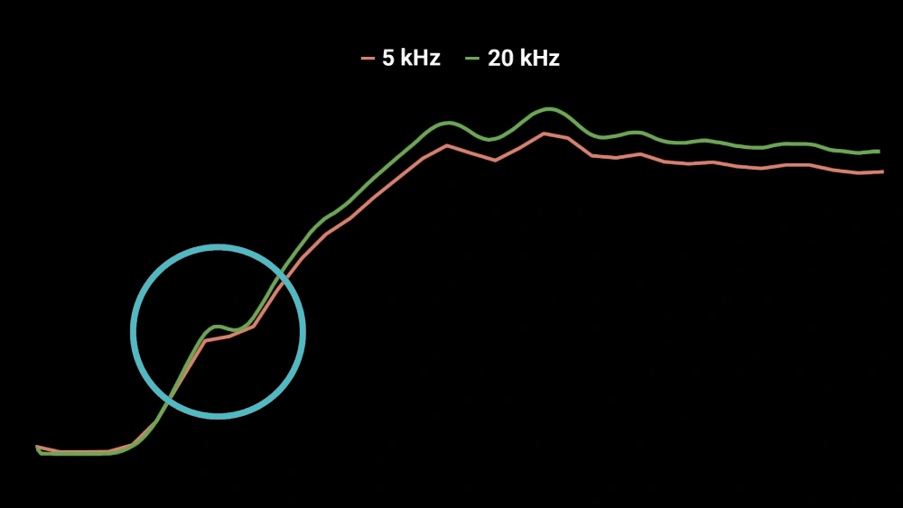

.jpg)
99.8%
Accuracy
Choose from our range of electromagnetic shock dynos, each engineered for specific testing requirements and performance benchmarks.
| Specification | 30 kW | 60 kW | 90 kW | 120 kW |
|---|---|---|---|---|
| Actuator Power | 30 kW | 60 kW | 90 kW | 120 kW |
| Peak Force @ 2 m/s | 10 kN (2248 lbf) | 20 kN (4496 lbf) | 30 kN (6744 lbf) | 40 kN (8992 lbf) |
| Max Velocity | 7,000 mm/s (276 in/s) | |||
| Min Velocity | 0.1 mm/s (0.04 in/s) | |||
| Max Test Frequency | 150 Hz | |||
| Max Acceleration | 100 G | |||
| Data Sampling Frequency |
Digital position sampling 20 kHz Synchronized analog load cell sampling 20 kHz, 20-bit resolution |
|||
| Additional ADC Channels | 8 synchronized channels, up to 10 kHz sampling rate | |||
| Position Resolution | 50 nanometers | |||
| Stroke | 250 mm (9.85 in) | |||
| Power Requirement |
3-phase 380/400 VAC 16 A Configurable for 1-phase 220/240 VAC |
|||
| Cooling System | Compressed Air | |||
| Supported Waveforms | Sine, Triangle, Square, Pulse, Pink noise, Sweep, Chirp, Track data import | |||
All specifications are subject to manufacturing tolerances. Contact us for detailed datasheets.
Every EMA system incorporates cutting-edge technology for unparalleled testing precision and reliability.
20 kHz sampling with 50 nm accuracy. No phase shift.


3 analog inputs for pressure, temp, acceleration at 20 kHz.
Temperature
Acceleration
Pressure
Noise Analysis
55 dB standby, 60-75 dB active. Ideal for EV testing.
Every component is engineered and manufactured in-house, ensuring uncompromising quality and performance.
Position Resolution
Sampling Rate
Load Cell Resolution
Engineered to detect the most minute force variations in damper performance, our data logger represents the pinnacle of measurement technology with multi-channel analog support for maximum versatility.
Our integrated control unit combines data logging and system control on a single board, featuring state-of-the-art silicon carbide (SiC) MOSFET technology for enhanced power efficiency and reduced operational costs.


Our revolutionary power supply utilizes supercapacitor technology to eliminate dependency on high-voltage inputs, making professional testing accessible in any environment including trackside applications.
Designed for exceptional user experience with minimal learning curve. Our software enables comprehensive data analysis, track data trimming, and seamless integration with additional testing equipment.
Modify data before and after analysis for optimal results
Focus analysis on specific course segments
Overlay cycles and compare performance metrics

AP Measurements shock dyno adapters create a seamless link, allowing for the most accurate and insightful tests of your shock absorbers. The result – enhanced performance, efficiency, and a deeper understanding of your equipment's capabilities.


Electromagnetic and hydraulic damper test systems are two distinct technologies used to evaluate and test dampers in various applications.
Electromagnetic actuators provide high precision in force control with quick response times. They excel in handling a wide range of frequencies and operate quietly, thanks to fewer moving parts and the absence of fluid dynamics. Additionally, these systems require less maintenance and experience minimal downtime, making them highly efficient.
On the other hand, hydraulic damper testing systems are designed to generate the higher forces needed for testing large or industrial dampers. Especially in lower-frequency testing. However, hydraulic systems demand regular maintenance due to potential leaks, fluid replacement needs, and the wear and tear of mechanical components. Moreover, they have more stringent health and safety requirements for operators compared to electromagnetic test systems.

Advanced electromagnetic technology enables precise control and high-frequency testing capabilities with exceptional repeatability.
Real-time data collection and analysis with sampling rates up to 100kHz for accurate performance measurement and validation.
Intuitive user interface with programmable test sequences and automated analysis routines for efficient workflow.
Comprehensive testing capabilities from ultra-low to high frequencies, simulating diverse road conditions and driving scenarios.
Detailed performance metrics including force-velocity analysis, force-displacement mapping, and hysteresis evaluation.
Flexible configuration options to accommodate various shock absorber sizes and specialized mounting requirements.